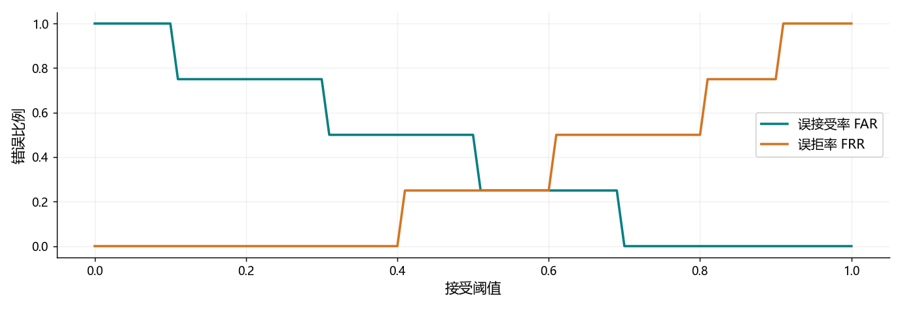

看图理解 · 跟着推演 · 对照真实结果
第15课 · 声纹分数到决策：阈值、误接受与误拒绝
用八个配对分数画出阈值曲线，理解声纹、日志和声音事件的边界。
点播放开始；点右侧小节可跳到不懂的部分。进度保存在当前浏览器。
先看视频，再动手
不必先读完正文。跟着视频暂停预测，看到运行图时解释横轴、纵轴和曲线，再做下面的自测。完整图文保留作查阅；视频讲清本课核心算例，不把看完等同于掌握全部专题。
先修：向量内积、数组与简单比例；不需要声纹模型。
- 手算余弦相似度
- 用正确分母计算 FAR 和 FRR
- 区分声纹验证、说话人日志与分离
跟着运行：注释代码、实际输出与结果图
下面代码在生成本站时实际执行。这里只是教学小实验，不是完整模型训练或业务设备测评。
import numpy as np
# 分数来自教学例子，不是声纹模型实测
same = np.array([0.9, 0.8, 0.6, 0.4])
different = np.array([0.7, 0.5, 0.3, 0.1])
threshold = np.linspace(0, 1, 101)
# 分数大于等于阈值，接受为同人
far = (different[None, :] >= threshold[:, None]).mean(axis=1)
frr = (same[None, :] < threshold[:, None]).mean(axis=1)
for value in [0.6, 0.8]:
a = np.mean(different >= value)
r = np.mean(same < value)
print("阈值", value, "FAR", a, "FRR", r)
assert np.isclose(np.mean(different >= 0.6), 0.25)
本次实际输出
阈值 0.6 FAR 0.25 FRR 0.25 阈值 0.8 FAR 0.0 FRR 0.5

闭卷自测：阈值从 0.6 提到 0.8，本例 FAR 和 FRR 怎么变？
FAR 从 1/4 降至 0；FRR 从 1/4 升至 2/4。提高阈值降低误接受，但增加误拒绝。
逐字讲稿 · 可定位回看
假设会议有两个人轮流说话，还有一段重叠。识别器给你文字，声纹验证比较两段是否同一个人，日志给每段时间贴人物标签，分离则尝试拆出各自的声音。
这些任务能一起用，但不能互相冒充。识别出我是张三，不等于验证说话人真是张三；日志标签 A 也只是聚类编号，不自动对应现实姓名。
我们先抓最小决策：给两段声音一个相似分数，然后决定接不接受为同人。用四个同人分数和四个异人分数，就能亲手看到阈值的代价。
声纹编码器把长短不一的语音变成固定维向量，通常叫嵌入。可以把它想成一张特征卡，但这张卡不是绝对不变的身份证号码。
同一个人换麦克风、换语言、轻声说话或只录很短一段，得到的向量都可能变化。静音很多时，聚合的内容甚至主要是背景，而不是稳定发声特征。
因此评分前要检查输入质量，并分别看长短录音、同设备和跨设备。把所有情况混成一个平均分，会遮住真正影响实际使用的失败条件。
取 a 等于一和零，b 等于零点八和零点六。两者长度都是一，内积是一乘零点八加零乘零点六，所以余弦相似度是零点八。
如果把 b 放大十倍，变成八和六，内积变成八，长度变成十，相除仍然是零点八。这说明余弦忽略整体尺度，但不说明它能自动抵抗噪声。
分数零点八只是这个评分规则下的相似程度。没有额外校准和适用条件，就不能念成同人的概率百分之八十；零向量还需要作为异常单独处理。
我们规定分数大于等于阈值就接受。阈值零点六时，同人四对中只有零点四被拒绝，因此误拒绝一对，除以四个同人对，得到百分之二十五。
异人四对中只有零点七被接受，因此误接受一对，除以四个异人对，也得到百分之二十五。注意两个分母分别对应两种真值，不能都除以总共八对。
如果业务特别不能容忍冒认，可以提高阈值，但这不是免费改善。阈值零点八时异人都被拒绝，误接受为零；同人零点六和零点四都被拒，误拒升到一半。
误接受率的英文缩写是 FAR，误拒率是 FRR。随着接受条件更严格，异人更难混进来，但真正同人的低分录音也更容易被挡在外面。
本例两者在零点六时都为百分之二十五，这个工作点可以说明等错误率的概念。真实有限样本不一定恰好相等，需要说明近似或插值规则。
上线固定阈值应该按开发集和业务代价选择，然后在独立测试上报告结果。测试集扫描得到 EER 是指标计算，但不能把事后最佳阈值说成上线前已经确定。
先把同人、异人的四个分数分别存成一维数组。阈值从零到一取一百零一个位置，每个阈值都要重新检查四对，不能只改变图上的标注。
新增维度后，四个分数和一百零一个阈值广播为一百零一行四列。每行对应一个阈值，每列对应一个配对，比较结果是真或假。
沿每行求平均，就把真视为一、假视为零，得到错误比例。异人使用大于等于，同人误拒使用小于，两个边界必须与接受规则保持一致。
看横轴阈值从左向右增加，误接受整体下降，误拒整体上升。打印阈值零点六得到两个零点二五，阈值零点八得到零和零点五，与刚才手算一致。
曲线呈阶梯是正常的。每类只有四个配对，增加或减少一处错误就改变二十五个百分点，画得再平滑也不会凭空增加测量精度。
这些分数是人为给定教学数据，不是真实声纹成绩。想评价模型，需要有授权录音、配对规则、独立划分和足够样本，还应对不同设备条件分别报告。
会议日志先找有人说话的区间，再切片、提取嵌入、聚类并回填时间线。切片跨过换人边界，向量就可能混人；切得太短，又可能没有足够稳定信息。
设真实 A 说零到四秒，B 说四到十秒。预测 A 到五秒、B 到九秒，就有一秒说话人混淆，以及最后一秒语音漏掉。无重叠无容差时，错误两秒除十秒为百分之二十。
若系统把 A 和 B 的编号全部交换，不应直接判全部错误，需要按协议做一致标签映射。是否计重叠、边界容差多大，也必须固定，不能混着比较 DER。
录音里可以同时有人讲话和狗叫，因此事件标签可能两个都为真。若强迫所有类别通过一个互斥选择竞争，就会错误地要求只能留下其中一个。
常见多标签系统对每类分别打分，并评价时间边界。整段分类说这段有狗叫，不等于已经准确找到狗叫的起止秒数，定位任务需要单独的指标协议。
背景时间很多时，即使一直预测没有事件，逐帧准确率也可能很高。应同时看短事件召回、误报、各类分组，不要只展示一个很好看的整体准确率。
一千个异人配对中，五个被接受，误接受率是多少？五除以一千是零点零零五，也就是百分之零点五。不要因为测试里还有同人对就换分母。
如果阈值提高后误接受变少，而误拒变多，这是不是算法坏了？不一定，这首先是工作点的正常取舍。要判断模型进步，需要同样协议下比较整组表现。
你的作业是改一个同人分数，预测曲线哪个区间会变化，再运行核对。最后用匿名标签整理两类失败案例，说明数据权限，别把他人声音与真实身份随意公开。
适用边界与参考正文
八个分数是教学输入，曲线不是声纹模型实测；没有运行真实 diarization 或事件检测模型。
图、公式、代码结果均由本站制作；旁白是本地中文语音合成，不是教师真人录音，也不是 NotebookLM 生成。没有向 Google 上传项目材料。